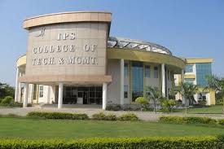
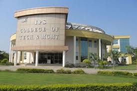

The Deendayal Krishi Avam Gramin Proudyogiki Vikas Sansthan was registered under the Madhya Pradesh Society Registration Act (SN. 44 of year 1973) by a group of philanthropically inclined individuals, who decided to work together for the betterment of the society. Over a period of time, it earned recognition and accolades from all quarters as a premier non-governmental educational organization.
The Institute of Professional Studies (IPS), founded in the year 2005 with a vision to convert the potential of today's youth into productive human resource of the society, has always promoted the belief that emotional, intellectual, and physical lives are interconnected, just as people's lives are intertwined throughout the society. The Group believes in the philosophy-"education of the whole person in spirit, mind and body"-which is its guiding principle. It is based on the understanding that all people regardless of caste, religion, background, or upbringing have tremendous potential. This potential is explored and exploited by providing several value-addition programs to enrich the lives of its students. They are prepared to think critically, and to recognize how their endeavors contribute to the well-being of the society, and the country at large.
The IPS Group of Colleges is one of the younger educational institutions of the state of Madhya Pradesh. During the initial phase of the college, it came up of with College Of Education and within a span of five years, the IPS-Group of Colleges has grown to contain four colleges with over 2,000 students.
The IPS Group of Colleges is not just a group of institutions which imparts value-based education, but an experience where everyone associated is part of a dream, a mission to see a qualitative change in the educational scenario of the state. We believe that our youth have the intelligence, the talent, and the potential to be the most successful people.
At IPS, we groom young future leaders to be complete, value-driven human beings and competent professionals. We try to inculcate in each student, by example, the spirit of commitment, loyalty, sincerity, and values. Here, research and teaching go hand-in-hand providing students with the opportunity to work with professionals in their respective fields.